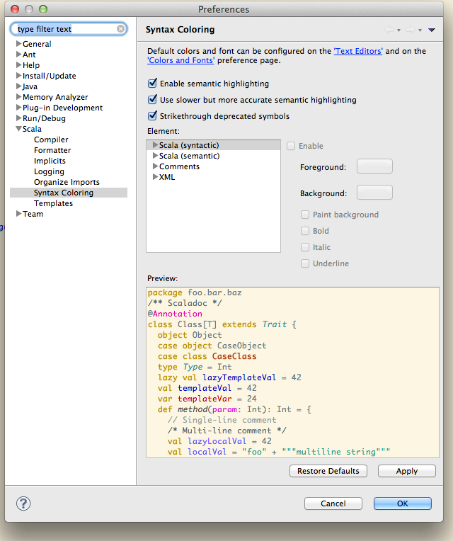

Semantic Highlighting
Haven’t you always wanted to have more colors in your source code? Meet semantic highlighting!
Introduction
While syntax highlighting deals with keywords, strings and other low-level tokens in the language, semantic highlighting takes it a (big) step forward! Classes, traits, types, vals, vars, methods, etc. can each have their own assign color and text style. Our favorite is having deprecated symbols striked-through. The coloring is consistent between the use-site and definition site, so all occurrences of a symbol will be colored the same way.
Configuration
There is a slight performance penalty for using semantic highlighting. However, this is done in the background and we haven’t noticed any important slowdowns. Should you notice any, you can always jump to the preferences page and tweak or completely disable this feature.
You can enable/disable and tweak your color scheme from the configuration page. The highlighter will use Java colors by default, but there are more semantic classes in Scala, so make sure you tweak them to your liking. We suggest the Java-based Color Theme plugin as a starting point.
Thank you
Semantic highlighting was contributed by Matt Russel. Thank you!